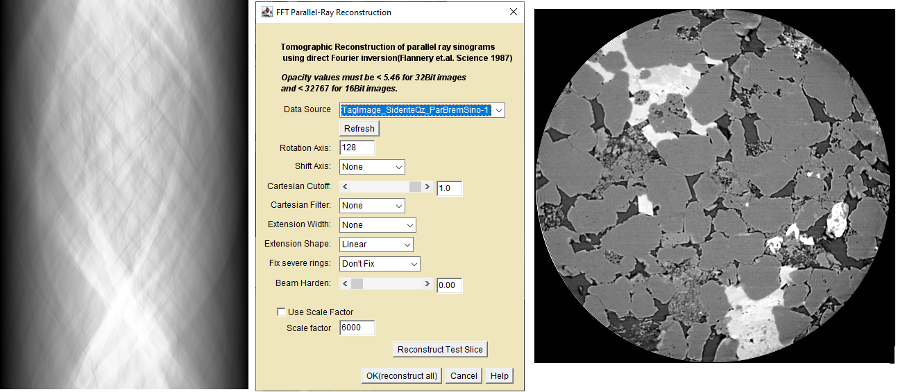

CT_Recon is a user interface to Base_Recon.exe, a Windows based executable for reconstructing 180 degree parallel-beam sinograms using direct Fourier inversion(DFI).

Sinogram(Left), CT_Recon User interface(Center), Reconstructed Slice(Right))
Description
Input sinograms are parallel-beam projected opacity (tau) values acquired at equally spaced angles between 0 and 180 degrees of specimen rotation. Sinograms of this type can be obtained either by experiment or by digitally scanning test images with the parallel projector plugins described on the Scan Simulators page. Sinogram images have dimensions of length(cm) in the horizontal(x) dimension and angle(theta) in the vertical(y) dimension. The DFI algorithm first computes the 1D FT of each of the rows(angles) in the sinogram. The f(r,theta) polar transforms are interpolated onto a 2D Cartesian f(x,y) grid to form the 2D FT of the image. The output image is computed from the inverse 2D FT of the interpolated transform. DFI is inherently noisier than other reconstruction techniques and produces significant artifacts if the input sinogram data does not cover the full 0-180 degree angular range. However, it has a significant speed advantage that makes it well suited for digital simulations.
Using CT_Recon non-modal dialog
Dialog Components
Data Source - The default data source is the active image or image stack. You may select another sinogram using the Data Source menu.
Refresh - Click if the Data Source list gets out of sync with the displayed images.
Rotation Axis - The default axis of rotation is the mid-point of the active image. Enter the actual value for your CT scan
Shift Axis - A scan's axis of rotation is not always exactly centered on a pixel. Select a fractional shift and observe the reconstruction for any improvement.The image data is shifted by interpolation so some loss of resolution may occur.
Cartesian Cutoff - 1 is the Nyquist frequency. Lower values reduce noise by blurring the image.
Cartesian Filter - The usual suspects to reduce noise with minimal blurring. The cutoff is applied to the chosen filter.
Extension Width - Minimize artifacts arising from a portion of the specimen rotating outside the field of view by pasting "wings" onto the sinogram edges that decay smoothly from the edge attenuation value to zero. Pick a shape that works best for your sinogram.
Extension Shape - Like Extension Width, pick a shape that gives the best looking reconstruction. WARNING! Profile extended reconstructed attenuations will most likely be incorrect.
Fix Severe Rings - Detector point defects can cause severe ring artifacts. This option uses a 1D median on the sinogram rows to try to suppress the artifact.
Beam Harden - Applies a second order beam hardening correction to the sinogram attenuations. The slider adjusts the weight between the first and second order terms. Crude but effective on many relatively homogeneous specimens. Reconstructions may require rescaling to obtain correct linear attenuation values.
Use Scale Factor - Check this box and enter a scale factor when reconstructing 16-bit sinograms. The scale factor should be the same a that used by your CT scanner or the plugin projectors.
Reconstruct Test Slice - Opens a "TestRecon"" reconstructed image. Change a setting and click again to observe the result.
OK(reconstruct) - Creates a new image or image stack with the final reconstruction(s)
Notes about Base_Recon.exe
It's old, original in 1997, unchanged since 2007
It uses FFTW to do the FFTs and does not require input sinograms to be a power of 2 in width.
It expects signed 16-bit sinograms as input, i.e. absorbance*scaleConstant.
Both FFTW and Base_Recon.exe are written in native 'C' and may not be compatible with your ImageJ environment.
It uses a command line interface for instructions and file IO for data transfer.
The command line interface was programmed by a third party. LazzyIzzi wrote the DFI code.
I still have the source codes for the reconstructions but the Base_Recon command line UI codes have been lost.
The CT_Recon plugin communicates with Base_Recon.exe using the command-line interface by creating temporary files in the ImageJ "plugins"" folder.
It leverages an old reconstruction code. Better implementations may be available.
It is unlikely to be updated because more recent implementations are available from other sources.
32-bit sinograms are automatically scaled by 6000, i.e. absorbance*6000.
The projector and reconstruction plugins allow for other scale constants.
Auto-scaling 32-bit absorbances greater than τ=5.461 will cause ImageJ's unsigned 16-bit data to wrap when converted to Base_Recon's signed 16-bit2. Use the same smaller scale factor when projecting and reconstructing.
It is not suitable for fan-beam data.
The image list may get out of sync with the displayed images.
It leaves temporary files in your plugins directory. You may delete them at any time.
Base_Recon.exe must be present in the plugins folder.
An absorbance greater than 5.46 are unlikely to be observable in routine practice but can be easily produced in simulation.
Base_Recon uses signed 16-bit sinograms because negative absorbances can occur in real CT scans due to noise and X-ray scatter.